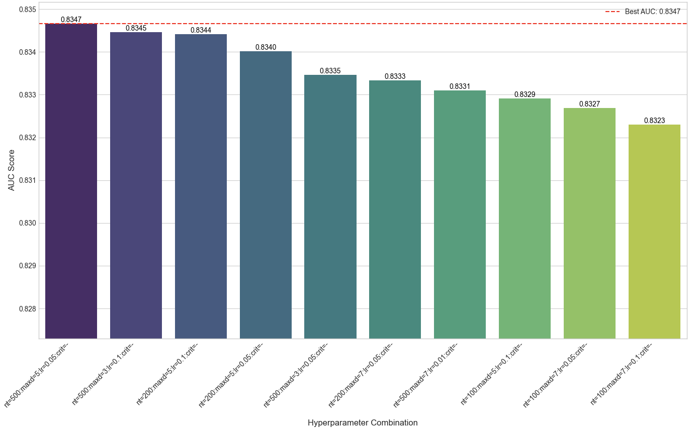
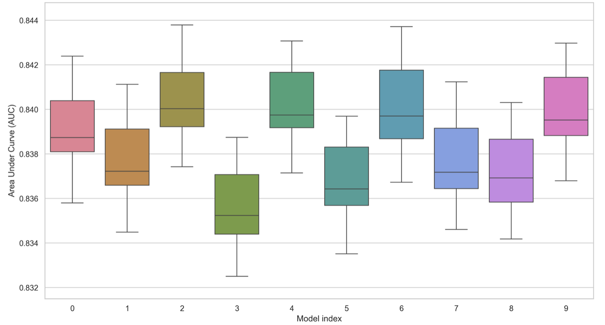
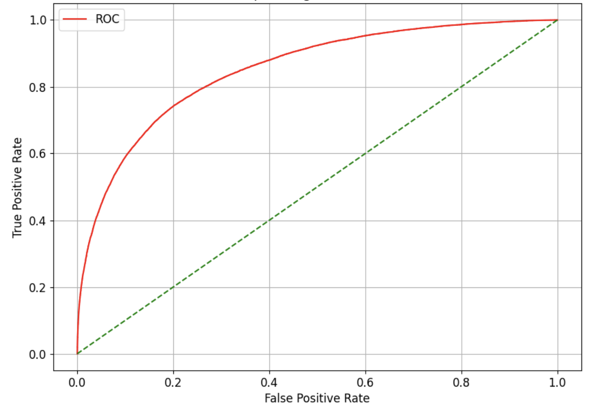
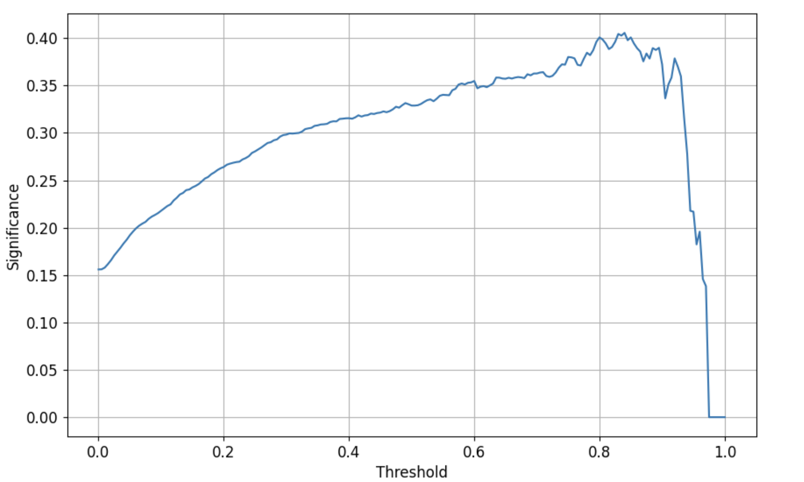
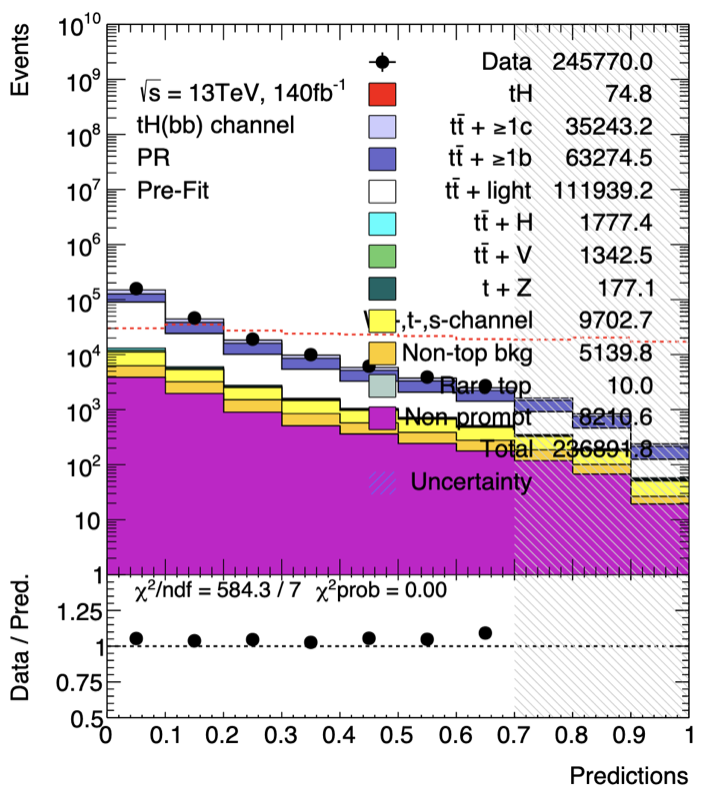
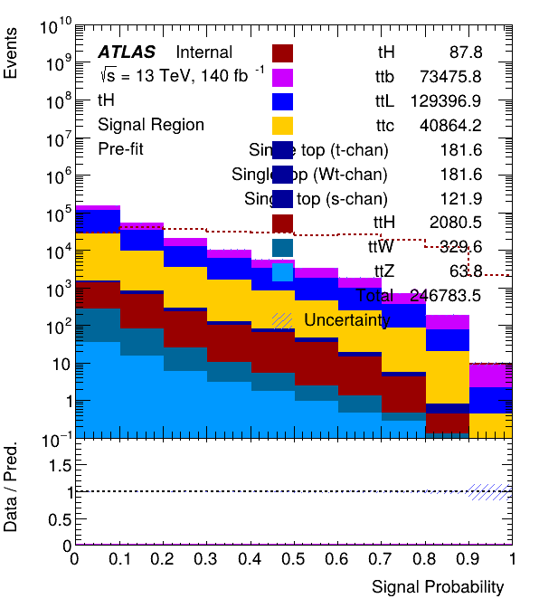
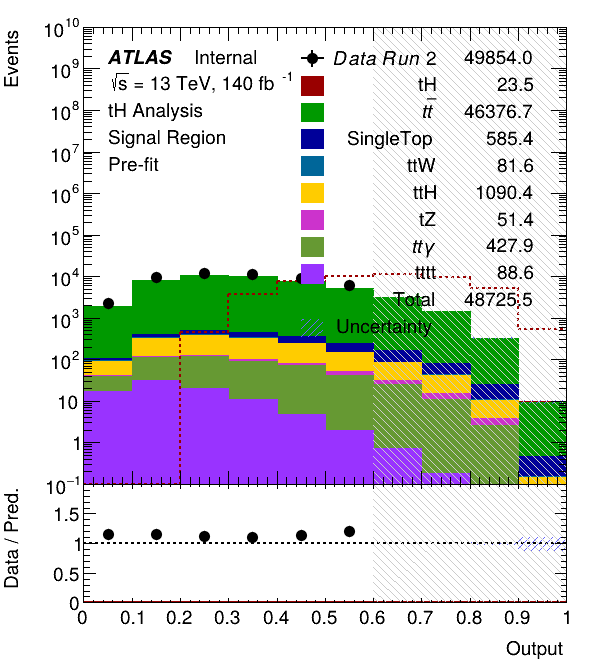
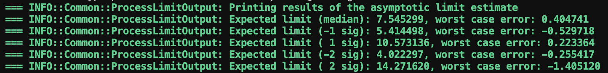

1. Introduction
This report details the analysis of the \( tH(b\overline{b}) \) production channel using the ATLAS software Release 22. A significant discrepancy was observed between the established Release 21 results (performed by Martin Vatrt and Jassimar Singh) and the Release 22.
To address this performance gap, a two-step approach was adopted. First, the analysis from Release 21 was fully reproduced to establish a reliable baseline. Second, the analysis was fully migrated to Release 22 with the intention to bridge the performance gap between the two analyses.
Consequently, the first chapter focuses exclusively on the reproduction of the Release 21 analysis. The subsequent chapters detail the migration to Release 22 and the optimization strategies employed.
2. Release 21 Analysis
2.1 Input Data
The reproduction phase utilizes mc16a, mc16d, and mc16e minintuples stored in the ATLAS group disk.
2.2 Code Adaptation
These ntuples were slightly different than the ones that Martin Vatrt used in his analysis. Therefore, the reproduction of the Release 21 analysis required adapting the code to handle technical inconsistencies in the input Ntuples. Several features used in the previous analysis were missing, renamed, or stored as different variable types. Additionally, missing sections of the original code had to be reconstructed to restore the full analysis.
2.3 Hyperparameter Optimization
To match the baseline performance, a two-phase optimization was conducted. First, a Grid Search was applied to the XGBoost model to establish fundamental parameters such as learning rate and tree depth.

Second, the Optuna framework (using TPE and NSGA-II samplers) was employed to fine-tune regularization and scaling parameters.

2.4 Performance Verification
The validity of the Release 21 reproduction was assessed by benchmarking the classifier's performance and the final statistical limits against the reference results. The resulting metrics for the XGBoost model are visualized in Figure 3. As shown in Figure 3a, the ROC curve exhibits strong discrimination power comparable to the reference analysis. This is further corroborated by the significance scan in Figure 3b, which demonstrates a maximum sensitivity at a classifier threshold of approximately 0.40. This threshold behavior mirrors the reference study.


Figure 3: Performance metrics for the reproduced Release 21 BDT.
With the classifier performance validated, the analysis proceeded to the statistical inference stage using TRExFitter. Figure 4 presents a comparison of the pre-fit distributions for the signal region. The reproduced distribution (b) shows agreement with the reference (a) regarding background composition and event yields.
This visual agreement is quantified by the expected upper limit on the signal strength parameter (\( \mu \)). Considering statistical uncertainties only, the expected median limit for this reproduction is determined to be 4.30, which stands in close agreement with the reference value of 4.02.


Figure 4: Comparison of the TRExFitter pre-fit distributions for the Signal Region.
These results demonstrate that the Release 21 analysis is fully reproducible and behaves as expected. Therefore, the focus of the study can shift to diagnosing and resolving the specific issues affecting the Release 22 performance.
3. Initial Release 22 Study
Before detailing my Release 22 analysis, it is useful to review an initial study performed by summer student Noor Ahmad. This project established the technical workflow for the new software release, utilizing TopCPToolkit and FastFrames to train a TabNet machine learning model.
While the technical migration was successful, the study observed a substantial reduction in the available statistics compared to the Release 21 baseline. The background yield decreased from approximately 237,000 to 9,000 events, while the signal yield dropped from 74.8 to 7.4 events.
As a result of this reduced statistical power, the expected upper limit on the signal strength was calculated to be \( \mu=22.4 \) compared to the reference value of \( \mu \approx 4.0 \). The report identified this reduction in event yields as a key area for further investigation. The subsequent chapters of this report address these discrepancies, implementing corrections to recover the full dataset and restore the expected sensitivity.
4. Datasets and Simulation
The analysis utilizes Monte Carlo (MC) simulation samples to model both the signal (tH) and the dominant background processes. The background contributions include \( t\overline{t} \) production, single top quark production, \( t\overline{t}H \), \( t\overline{t}\gamma \), \( tZ \), \( t\overline{t}W \), \( t\overline{t}t\overline{t} \), and other minor processes. The specific dataset IDs (DSIDs) used for each process category are listed in Table 1.
| Process | DSIDs |
|---|---|
| tH | 545796 |
| tt | 410470 |
| SingleTop | 410644, 410645, 410658, 410659 |
| ttH | 346343, 346344, 346345 |
| ttγ | 500800, 504554 |
| tZ | 410560 |
| ttW | 701260, 701261, 701262 |
| tttt | 412043 |
| Others | 304014, 500460, 500461, 410081, 500463, 504334, 504342, 500462, 346645, 346646, 410408, 504330 |
Table 1: DSID for the background and signal processes considered for the study.
5. Features to Separate Signal and Background
Each event in this study is characterized by physical features that are useful to distinguish between signal and background processes. By incorporating these features into the machine learning model, the algorithm will learn which variables most effectively distinguish the tH signal from the background. The most relevant features used in this analysis are summarized in Table 2.
| Feature | Description |
|---|---|
| jets_n | The total number of jets in the event. |
| dEta_maxMjj_frwdjet | The pseudorapidity separation between the two jets forming the maximum invariant mass and the forward jet. |
| MLepMet | The invariant mass of the lepton and missing transverse energy system. |
| HT | Sum of transverse momenta of reconstructed objects (overall event energy). |
| leps_charge_0 | The charge of the selected lepton. |
| sphericity_l10tau | Event-shape variable characterizing overall geometry. |
| bjets70_pt_0 | Transverse momentum of leading b-jet with \( p_T > 70 \) GeV. |
| aplanarity_l10tau | Event-shape variable measuring isotropy. |
| Jets_fwd_pt_0 | Momentum of the leading forward jet. |
| MtLepMet | Transverse mass of lepton and missing energy (identifies leptonic W decays). |
| DeltaR_min_lep_jet_fwd | Minimum angular separation \( \Delta R \) between lepton and forward jet. |
| nbJets70 | Number of b-tagged jets. |
| sumPsBtag | Combined b-tagging score sum. |
| Delta_Eta_tH | Pseudorapidity separation between reconstructed top quark and Higgs boson. |
| bjets70_eta_0 | Pseudorapidity (\( \eta \)) of the leading b-jet. |
Table 2: Features and their descriptions.
6. Multivariate Analysis
To separate the signal (tH) from the background, a multivariate analysis is performed using the XGBOOST library. Several boosting methods were tested, including standard gradient boosting and DART. However, the best results came from using the Histogram-based algorithm combined with native support for categorical features.
6.1 Data Preparation
A Python script converts the ROOT files into CSV format for training. It groups the files by their Dataset IDs (DSIDs) using the uproot and pandas libraries. If a variable is missing from an event (for example, a 4th jet that does not exist), it is filled with NaN instead of a mean value. This is effective because XGBOOST handles missing values natively. The algorithm learns the optimal path in the decision tree for these NaN entries, treating the absence of an object as real physical information rather than a numerical error.
The final dataset is randomly split into training (80%) and testing (20%) sets. The training set is further divided during cross-validation to provide a validation subset, ensuring the model does not just memorize the data.
Event Reweighting
Unlike previous analyses that ignored event weights during training, this study uses full event weights. To stop the training from becoming unstable due to very large or small weights, a renormalization step was applied. For each class, the weights were scaled so that their sum equals the total number of raw events. This keeps the physical probability density of the data while making the mathematical optimization stable.
6.2 Model Configuration
The classifier minimizes the binary logistic loss. To handle the large number of background events compared to the signal, the scale_pos_weight parameter is set to 10.5. The hyperparameters (Table 3) were tuned to maximize the Area Under the Curve (AUC).
| Parameter | Value |
|---|---|
| Objective | binary:logistic |
| Tree Method | Hist |
| Enable Categorical | True |
| Learning Rate (η) | 0.031 |
| Max Depth | 7 |
| Min child weight | 10 |
| Num. Boosting Rounds | 5000 |
| Early Stopping | 200 |
| Scale Pos Weight | 10.5 |
| λ (L2 reg.) | 1.74 |
| α (L1 reg.) | 1.26 |
Table 3: Hyperparameters used for the XGBOOST classifier.
6.3 Overfitting Check
During training, there was a gap of about 6% between the weighted training and testing scores. This looked like overfitting, but it was actually caused by a few events with very high weights. To prove this, the model was checked using unweighted scores. The difference dropped to less than 2.0%, confirming that the model is stable and generalizes well.
6.4 Performance
The XGBoost model achieves a final unweighted AUC score of 0.8090. Figure 5 shows the distribution of the classifier output in the Signal Region. While the event yields remain lower than the Release 21 baseline, they show a significant recovery compared to the initial Release 22 study. The total background is approximately 48,725 events (increased from ~9,000), and the signal yield is 23.5 events. The plot shows good separation, with the signal (red dashed line) peaking clearly in the high-score bins.

Figure 6 shows the statistical limit calculation. The expected upper limit on the signal strength is \( \mu=7.54 \) at 95% CL. This is a major improvement over the preliminary result of 22.4.

Comparison Tables
| Analysis | Ntuple | Background | Systematics | Exp. limit |
|---|---|---|---|---|
| Martin Vatrt | old | full | none | 3.89 |
| Martin Vatrt | old | partial | partial | 6.35 |
| Jassimar | new | full | none | 4.02 |
| Jassimar | old | partial | partial | 6.35 |
| Jassimar | new | partial | partial | 7.09 |
| Jassimar | new | full | partial | 7.5 |
| Jassimar | new | full | full | 8.15 |
| Mo Aly | new | full | full | 13.9 |
| Initial study (Rel.22) | new | full | none | 22.4 |
| This study (Rel.22) | new | full | none | 7.54 |
Table 4: Expected limit comparison between analyses. Note: The "22.4" value refers to the preliminary result before corrections.